MR-ESC-AM32 Hardware Architecture and Reference Design¶
The MR-ESC-AM32 is a brushless DC (BLDC) electronic speed controller (ESC) based on the open-source AM32 firmware and implemented using NXP MCX microcontrollers. It is designed for drones, robotic vehicles, and other applications requiring sensorless BLDC motor control. The controller implements six-step commutation using back-EMF (BEMF) zero-cross detection and is intended to operate under the control of an external flight controller or motor-control system. Supported control interfaces include RC-PWM, DShot, and bidirectional DShot.
The hardware consists of an NXP MCXA133 microcontroller, a DRV8300N three-phase gate driver, a MOSFET-based power stage, and the associated analog circuitry required for BEMF sensing and power regulation. In addition to the motor-control functions, the design includes support for an addressable RGB status LED and provisions for quadrature encoder feedback. The quadrature encoder interface is intended for future applications requiring rotor position or wheel-odometry feedback but is not currently implemented in the AM32 firmware.
This application note describes the hardware architecture and major functional blocks of the MR-ESC-AM32 reference design for hardware engineers and ESC designers. The AM32 firmware algorithms and configuration are described in the MR-ESC-AM32 User Manual and in the upstream AM32 project.
About the AM32 community¶

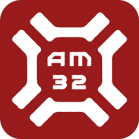
While the NXP SDK provides a tested version of the AM32 software on the MR-ESC-AM32, AM32 is an open-source, community-supported firmware project. Firmware, configuration tools, and documentation are available through am32.ca and wiki.am32.ca, while source code, issue tracking, and contributions are managed by the am32-firmware organization on GitHub.
The AM32 community maintains a Discord server for user support, developer discussions, hardware-target questions, and community interaction. The current invitation is provided through the Support & Community section of the AM32 website.
Hardware description¶

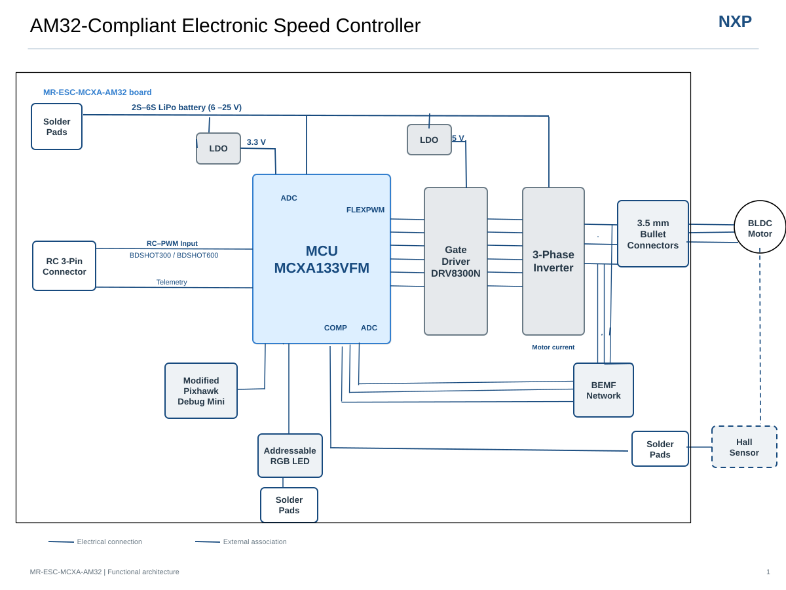
Figure 1. ESC system block diagram
The design consists of an NXP MCXA133 MCU, a DRV8300N gate driver, a three-phase MOSFET bridge, and a sensorless BEMF-detection network used by the AM32 firmware for six-step commutation. This BLDC motor-driver architecture is common and is not covered in detail here.
The board also includes:
Modified Pixhawk Debug Mini connector for programming and debugging
Green power LED and an addressable RGB status LED (extendable off board)
Optional Hall-sensor / encoder solder pads (hardware provision only)
Telemetry support through the bidirectional DShot protocol
Note: The Hall-sensor / encoder interface is present on the PCB but is not supported by the AM32 software implementation.
PWM input interface¶

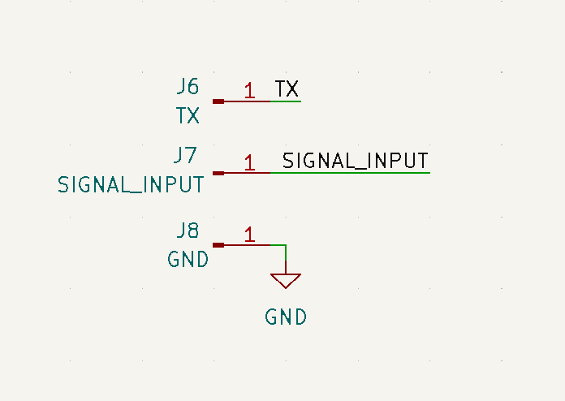
Figure 2. PWM, RC-PWM, DShot and TX interface
The MR-ESC-AM32 is intended to be controlled by a flight controller such as the MR-VMU-RT1176 or MR-VMU-TROPIC, or any other device capable of generating RC-PWM control signals, rather than operating standalone. The primary control interface is a standard 3-pin RC connector supporting RC-PWM input.
The AM32 firmware also supports DShot and bidirectional DShot telemetry modes for modern flight-controller integration.
The control signal is routed directly to the MCXA133 MCU, where timer-capture and PWM peripherals decode the throttle command. The MCU executes the AM32 sensorless commutation algorithm and generates six gate-drive control signals through its FlexPWM peripherals.
TX telemetry pin¶
The TX signal is supported by the NXP AM32 port as a dedicated serial-telemetry output. TX is routed from an MCXA133 UART transmit pin to a solder pad and also to pin 3 of the debug connector (J13).
AM32 uses it for KISS-format serial telemetry, reporting:
temperature
battery voltage
current
accumulated consumption
electrical RPM
TX is optional and is not required for motor control. It is separate from bidirectional DShot telemetry, which returns eRPM over the main DShot signal wire and does not require TX. TX may be connected to a compatible flight-controller telemetry input or to a suitable 3.3 V USB-to-UART receiver for diagnostics.
Note: TX should not normally be connected to the debugger through J13. A modified debug cable must be used with pin 3 removed: a debugger or probe could load or drive the telemetry signal and interfere with operation or SWD access.
Power supply¶

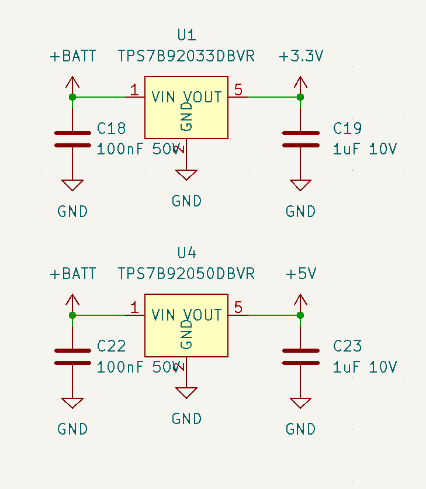
Figure 3. Power regulators
The ESC is powered directly from a 3S to 6S LiPo battery input.
Approximately 6 V to 25 V input is possible.
A 3S LiPo has a typical usable range of 10.5 V to 12.6 V.
A 6S LiPo has a typical usable range of 21.0 V to 25.2 V.
Note: Although the design may operate with a 2S battery, this configuration has not been validated.
The battery voltage serves two purposes:
It supplies the high-current three-phase inverter stage.
It feeds the onboard linear regulators.
The board contains two regulated rails:
5 V power supply — an LDO generates 5 V from the battery input. This rail powers the DRV8300N gate driver and supporting analog circuitry.
3.3 V power supply — a second LDO generates 3.3 V for the MCXA133 MCU, the BEMF-sensing circuitry, logic interfaces, and status LEDs.
This simple dual-LDO architecture minimizes BOM cost, minimizes noise, and follows the original AM32 reference-hardware philosophy.
Back-EMF (BEMF) detection network¶

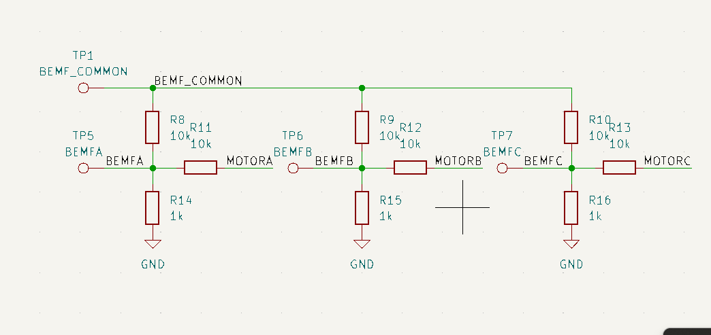
Figure 4. BEMF network
Rotor position is estimated from motor back electromotive force (BEMF) rather than from Hall sensors.
During operation:
Two motor phases are actively driven.
The third phase is left floating.
The floating-phase voltage contains the motor’s back-EMF waveform.
The BEMF network scales and filters this voltage before presenting it to the MCU comparator and ADC inputs. The MCXA133 MCU uses ADC channels and an internal analog comparator (COMP) to detect the BEMF zero-crossing event.
The BEMF network typically performs:
Voltage division of the motor-phase voltage.
RC filtering to suppress switching noise.
Creation of a virtual neutral reference.
Comparator-input conditioning.
When the floating phase crosses the virtual-neutral voltage, the comparator generates a zero-cross event. The AM32 firmware then predicts the next commutation point and advances the motor to the next state. This approach eliminates the need for rotor-position sensors while maintaining low cost and compact size.
Gate driver and power stage¶
The power stage consists of a DRV8300N gate driver controlling a three-phase MOSFET inverter.
DRV8300N gate driver¶

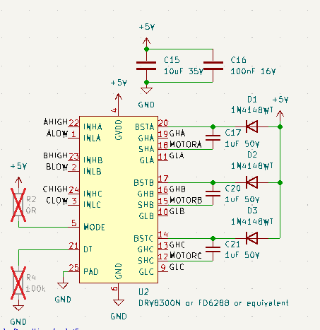
Figure 5. Gate driver
The DRV8300N performs several functions:
Level shifting between MCU logic and MOSFET gates
High-side gate-drive generation
Low-side gate-drive generation
Dead-time management
Fast switching of large MOSFET gate capacitances
The MCU FlexPWM module generates the PWM waveforms while the DRV8300N provides the current required to rapidly charge and discharge the MOSFET gates. The mode and dead-time settings configure the device for “6 PWM” control mode, where software controls the dead time rather than the gate driver itself.
Three-phase inverter¶

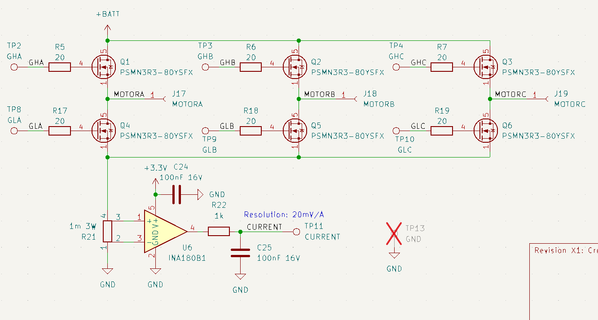
Figure 6. Power FETs and current measurement
The inverter consists of six N-channel MOSFETs arranged as:
Phase A high-side / low-side
Phase B high-side / low-side
Phase C high-side / low-side
The design uses Nexperia PSMN1R4-40 MOSFETs.
Note: This board is provided as an example implementation and does not establish a guaranteed current rating. Although the MOSFETs are rated for approximately 190 A to 240 A at the device level, the achievable ESC current is substantially lower and depends on the complete thermal design, including PCB copper area, airflow, cooling, and operating conditions. The user is responsible for implementing and validating a thermal design that supports the desired continuous and peak current ratings. Current estimates of approximately 50 A peak have been discussed but remain subject to full validation testing.
Motor-drive operation¶
The AM32 firmware implements:
Sensorless six-step commutation
Trapezoidal drive
Variable PWM frequency (optional / configurable)
Adjustable dead time
Sinusoidal startup sequence (optional / configurable)
The MCU calculates the active commutation sector, drives the appropriate gate-driver inputs, and regulates motor power through PWM modulation of the active MOSFET pair. The AM32 software and algorithms are outside the scope of this document; refer to the upstream AM32 repositories and community forums for support.
Debug interface¶

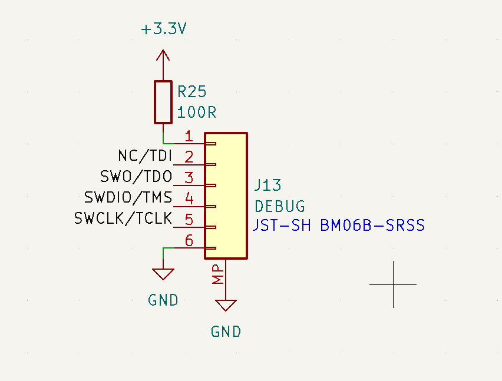
Figure 7. Modified DroneCode Debug Mini interface
J13 is a 6-pin JST-GH connector and provides the hardware programming and debug connection for the MCXA133 MCU. The connector is based on the standard Pixhawk Debug Mini interface but uses a modified pin assignment for this board. A correspondingly modified debug cable must be used: pin 3, which is assigned as a console output on the MR-ESC-AM32, should normally be left disconnected from the debugger. Connecting an unmodified debugger cable may drive or load this console signal and is not recommended.
Any SWD-capable programmer supporting MCX MCUs may be used to program this board. The MCU-Link-MR already includes the corresponding 6-pin JST-GH Dronecode Debug Mini and Standard interface connectors. Otherwise, a Dronecode / PX4 / Pixhawk JTAG-connector debug adapter may be required as documented at docs.px4.io.

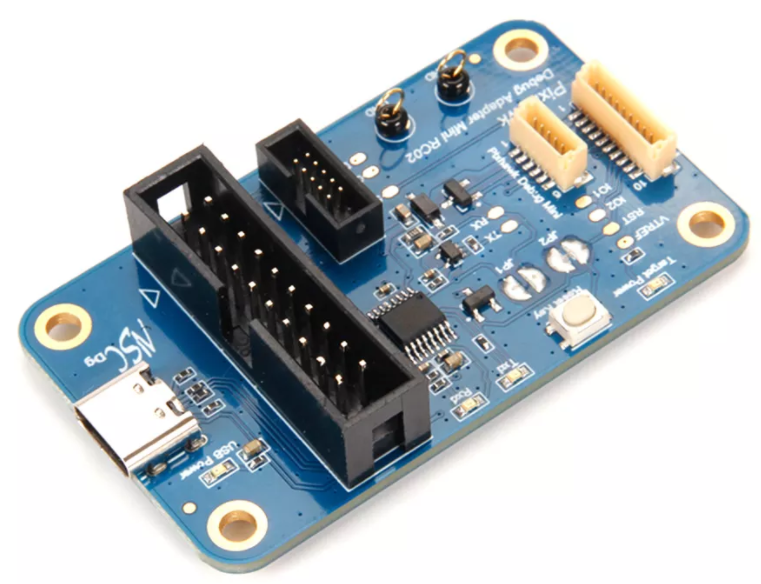
Figure 8. Example SWD (JTAG) hardware debugging interface adapter
Power LED and voltage sense¶

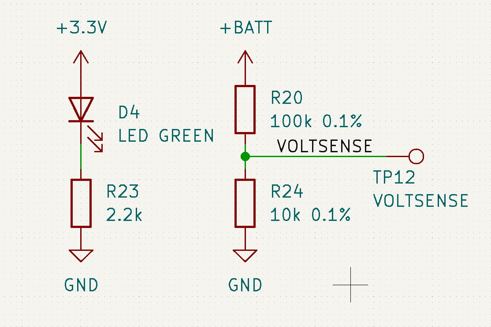
Figure 9. Power LED and voltage sensing circuit
A green LED indicates that the 3.3 V rail is present.
The VOLTSENSE circuit uses a 100 kΩ / 10 kΩ divider to scale the battery voltage by approximately 11:1 for measurement by an MCU ADC input. AM32 converts the ADC result to the estimated battery voltage and uses it for voltage telemetry and configured low-voltage protection. A dedicated test point provides the divided signal. VOLTSENSE is independent of the phase BEMF-sensing network.
Addressable RGB LED and interface¶
The board includes a BB-2020BGR-TRB individually addressable RGB LED using an APA102/SK9822-compatible two-wire synchronous serial interface with separate clock and data signals.
Power, ground, clock, and data are also available on interface solder pads, allowing additional compatible LEDs to be connected off board in a daisy chain.
The AM32 firmware includes software commands for controlling LED color and lighting behavior. The onboard LED and any external LEDs can be used to indicate controller or flight status, forward and reverse operation, or application-defined colors.
Note: AM32 software does not currently control LED-strip sequences or lighting patterns. The external supply and interconnect must be reviewed and sized to accommodate the number of added LEDs and their maximum current.
The NXP port’s observed default status colors are:
Bootloader mode: RGB LED off
Main application running, EEPROM configured, but no flight-controller signal: red
ESC armed: green
Hall / encoder interface¶

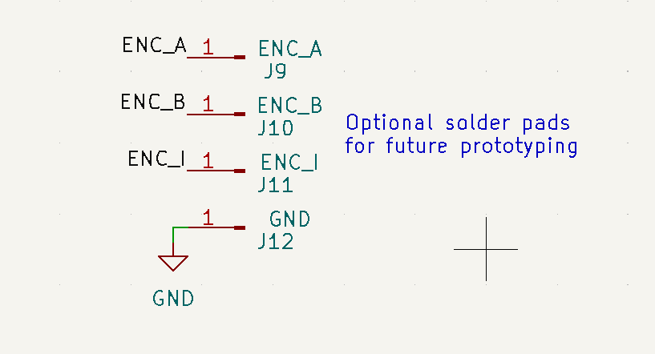
Figure 10. Hall encoder interface (not used)
The board provides solder-pad connections for an optional Hall-effect or quadrature-encoder interface. The encoder A and encoder C signals are routed directly to GPIO pins on the MCXA133 MCU that can be configured for the MCU’s eQDC quadrature-decoder peripheral. A nearby ground pad provides the signal reference. This hardware provision could support rotor-position or wheel-odometry feedback in a custom motor-control application.
Note: The interface is not implemented or supported by the current AM32 firmware; using it requires alternative firmware or additional software development.
ISPMODE switch¶

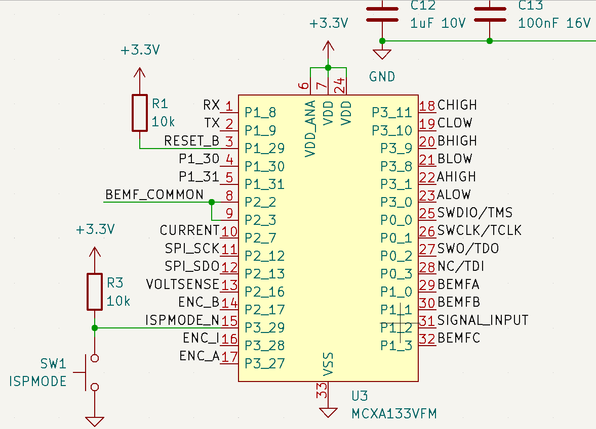
Figure 11. ISPMODE switch (not used)
The board includes an onboard switch (SW1) connected to an MCU input labeled ISPMODE. This input is not used by the current AM32 firmware and has no function during normal ESC operation. The switch and its associated circuitry may be omitted when adapting or copying the design.
Schematic, board layout, and bill of materials¶
The schematic, board layout, and bill of materials for the MR-ESC-AM32 board are available on the NXP product page.
Conclusion¶
The MR-ESC-AM32 combines a compact NXP MCXA133-based hardware platform with AM32, a widely used open-source ESC firmware for drone applications. The reference design provides a turnkey sensorless three-phase BLDC motor-control solution as implemented, including the gate driver, MOSFET power stage, BEMF sensing, and supporting interfaces. For applications with different current-handling requirements, the MOSFETs and associated power and thermal design may be resized, subject to appropriate electrical and thermal validation. The same hardware may also support additional software features or alternative motor-control firmware; however, their design, implementation, validation, and support are outside the scope of this document.
Abbreviations¶
Acronym |
Description |
|---|---|
ADC |
Analog-to-digital converter |
BEMF |
Back electromotive force |
BLDC |
Brushless DC |
DShot |
Digital Shot (digital ESC control protocol) |
ESC |
Electronic speed controller |
LDO |
Low-dropout regulator |
MCU |
Microcontroller unit |
MOSFET |
Metal-oxide-semiconductor field-effect transistor |
PWM |
Pulse-width modulation |
RC-PWM |
Radio-control pulse-width modulation |
RGB |
Red-green-blue (addressable LED) |
SWD |
Serial Wire Debug |
UART |
Universal asynchronous receiver-transmitter |
VMU |
Vehicle management unit |
References¶
MR-ESC-AM32 User Manual — AM32 firmware setup, flashing, and operation